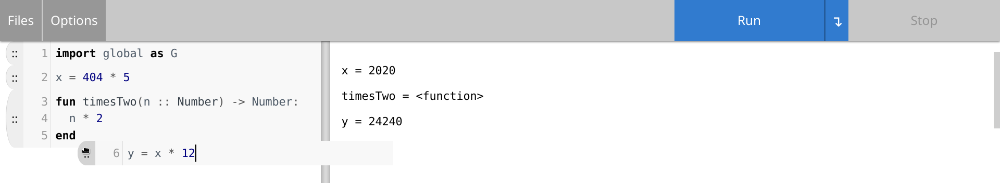
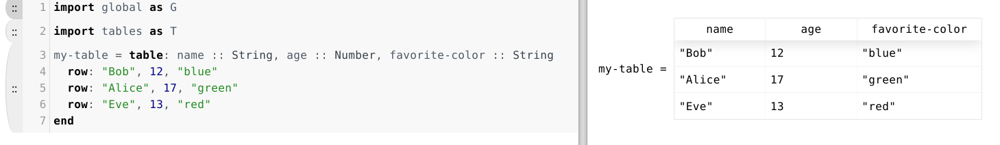

The Chunk Editor
Table of Contents
1 Introduction
Chunk editing is a new way to interact with Pyret programs. Statements are grouped into "chunks" that can be rearranged and linted independently. The right hand side displays bindings and test results from each chunk.
 Chunks on the left, values on the right. The user is dragging a chunk using the mouse.
2 Things to Try
2.1 Create a simple chunk
Identifiers and the values they are bound to are displayed on the right hand side of the page.
- Write
x = 404 * 5in an empty chunk. - Press
Enterto update the right hand side.

2.2 Create a multi-line chunk
Chunks are not limited to one line of code. Pressing Enter will advance you
to the next chunk only if the one you're editing is syntactically complete.
- Write
fun timesTwo(n :: Number) -> Number:in an empty chunk. - Press
Enterto move to the next line in the chunk. - Write
n * 2on the new line. - Press
Enter. - Write
endto complete the function definition. - Press
Enterto complete the chunk.

The chunk editor knows when you aren't finished with a statement. It will keep you in the same chunk until you complete it.
2.3 Create new chunks with Enter
2.4 Move between chunks with the arrow keys
Pressing Up Arrow while at the top of a chunk makes the cursor focus
the chunk above. Similarly, pressing Down Arrow while at the bottom focuses
the chunk below. This won't create any new chunks if they don't exist yet.
2.5 Delete an empty chunk
Using Backspace on an empty chunk will remove it, moving the cursor's focus
into the chunk above.
2.6 Fix an error
Chunks with errors1 are highlighted red. Pressing Enter will make them
jiggle and won't allow you to move into the next chunk.
- Write
x = 12in another chunk to introduce a re-declaration error. - Press
Enterto display the error. - Change
xtoyto fix the error. - Press
Enterto complete the chunk.

3 Things that don't entirely work yet
3.1 Tables
Most table syntax and functions work, but only with type-checking turned off (it's on by default). 
3.2 Error messages1
Errors aren't rendered very intelligently. They contain source location information embedded directly in the text. We're still trying to figure out the best way to render these.
3.3 Right hand side value rendering
Everything can be displayed on the right hand side, but some of it doesn't look very pretty.
The following list of items are rendered nicely:
- Images
- Tables (see 3.1)
- Small integers
- Strings
The following list of items could be displayed better:
- Abstract data types
- Large integers / non-integer numbers
- Functions
- Test results
Footnotes:
Only compile and lint errors are currently displayed next to the offending chunk(s). Runtime errors are displayed in a separate window.